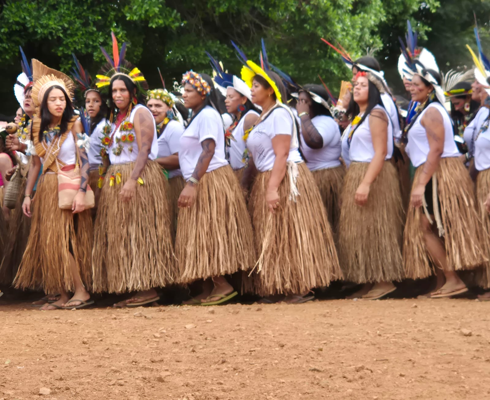
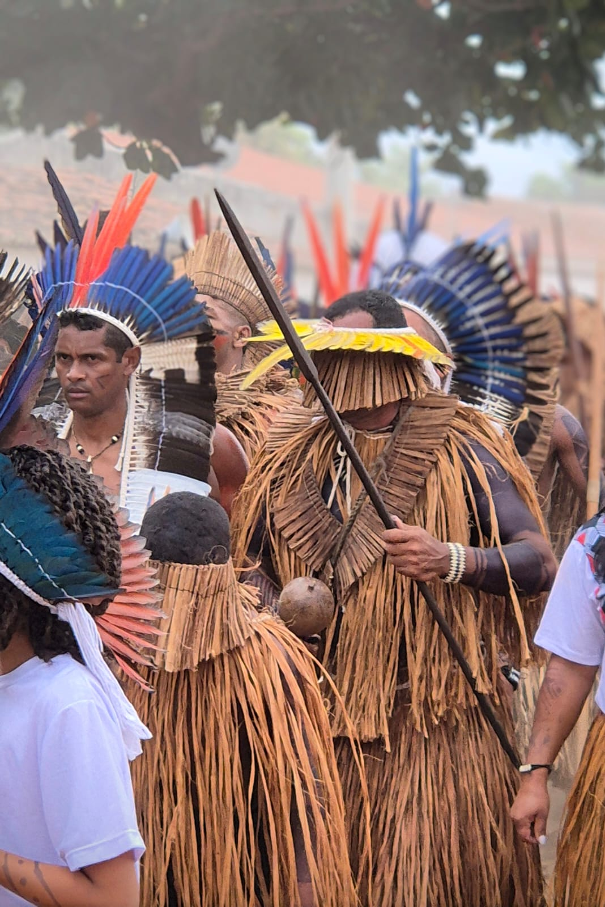
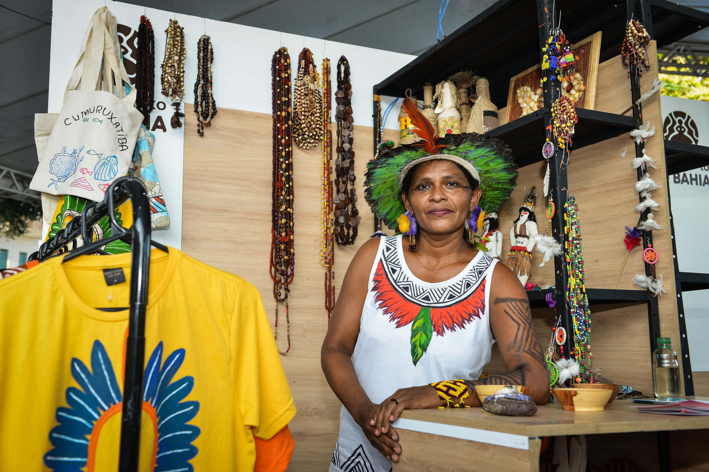

Cultura e artesanato
A cultura Xokó é caracterizada por rituais espirituais como o Ouricuri e a dança do Toré, além de festividades que mesclam tradições e conectam a comunidade aos seus antepassados e à natureza.
Cultura
Identidade Híbrida: A cultura Xokó é uma rica fusão de elementos das etnias Kariri e Xokó, refletindo sua história e sincretismo.
Rituais e Festividades: A comunidade realiza rituais espirituais, como o Ouricuri, e celebrações que envolvem cânticos, danças tradicionais e o uso de ervas medicinais, fortalecendo a identidade cultural e a espiritualidade.
Dança do Toré: Uma manifestação cultural fundamental, a dança Toré celebra a união da comunidade, utiliza trajes tradicionais e expressa a conexão com a natureza, a história e os antepassados.
Transmissão de Conhecimentos: Há um grande valor na transmissão dos saberes e da cultura para as novas gerações, garantindo que as tradições e os conhecimentos ancestrais se mantenham vivos.

Artesanato
Cerâmica e Cestaria: Destaques na produção artesanal, essas peças são adornadas com símbolos que representam a cosmologia e as histórias do povo Xocó.
Materiais Naturais: A cestaria é feita com fibras naturais, como cipó e palha, resultando em itens funcionais como cestas e peneiras.
Expressão e Renda: O artesanato não é apenas uma forma de expressão artística, mas também uma importante fonte de renda para a comunidade, impulsionando a economia local.
Sustentabilidade: A produção artesanal está ligada às práticas sustentáveis do povo, valorizando o uso de materiais e técnicas que respeitam o meio ambiente.
